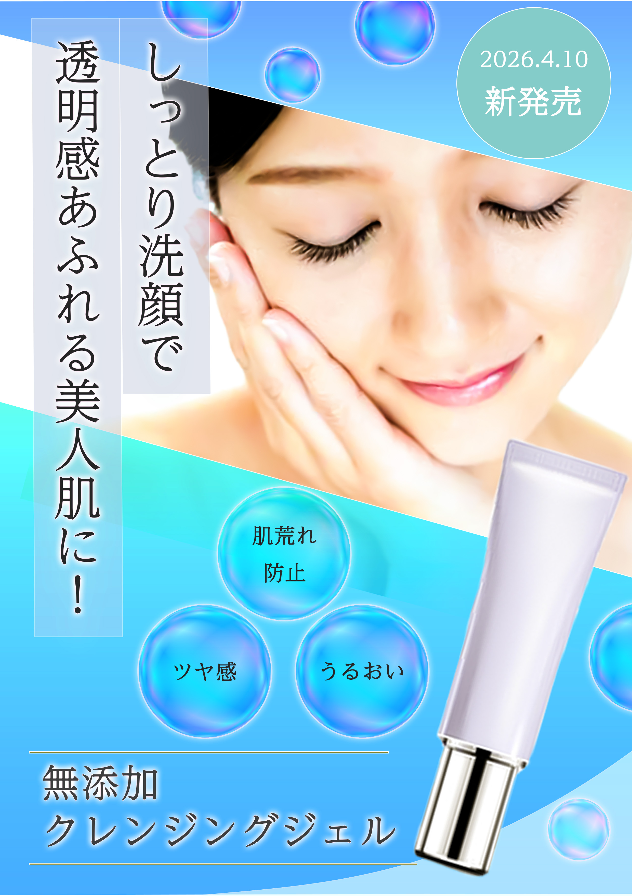
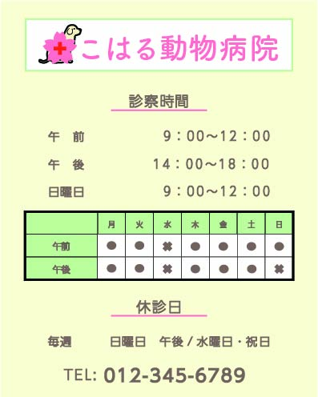
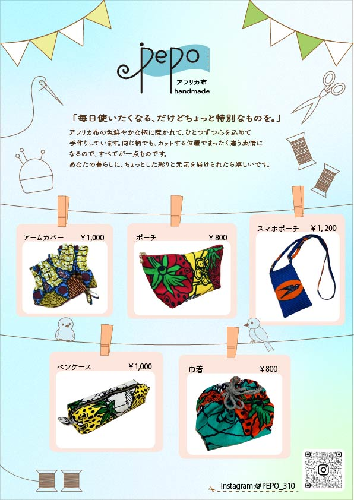

化粧品広告フライヤー
- 目的：新作商品の宣伝をするため
- ターゲット：20〜45歳女性, 肌悩みやクレンジングと洗顔を同時にしたい人向け
- 工夫した点：青や白を使い、清潔感や透明感を出せるように意識しました。キャッチコピーを左に大きく配置し購入を促すように強調しました。３つのポイントをシャボン玉のオブジェクトの中に配置し、ぱっと見てすぐに情報が読み取れるように意識しました。
- 使用ツール：Photoshop
- 制作期間：約3時間

こはる動物病院案内フライヤー
- 目的：診察時間や休診日を分かりやすく案内するため
- ターゲット：病院を訪れた方、来院しようとしている方
- 工夫した点：「架空病院こはる動物病院のサイト」にあわせて診察時間や、休診日を分かりやすく伝わるように意識して制作しました。親しみやすさ、柔らかい雰囲気を出すために丸みのあるフォントを使いました。
連絡手段の電話番号は重要な情報のため、文字の大きさを大きくし主張しました。
- 使用ツール：Illustrator
- 制作期間：6時間

ハンドメイドブランドの
イベントフライヤー
- 目的：フリーマーケットに出店するため、販売する商品の告知
- ターゲット：地域の方、お子様とその保護者の方
- 工夫した点：ロゴは、そよ風を意味するスワヒリ語「UPEPO」から由来していることから
風を感じるようにpに動きをつけました。旗のようなオブジェクトで
軽やかさを表現し、縫い目で布らしさを加えています。
背景は淡い色で布の柄を引き立て、線画のイラストにし商品に目が留まるように意識しました。お客様にはお子様もいるため可愛らしく親しみやすいデザインにしました。
- 使用ツール：ilustrator・Photoshop
- 制作期間：約2日間